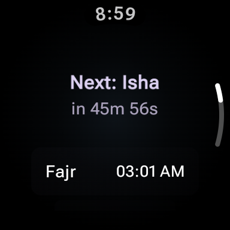
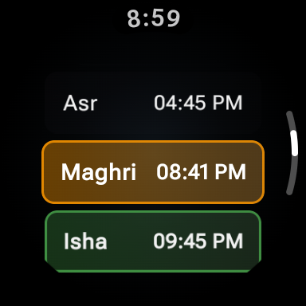
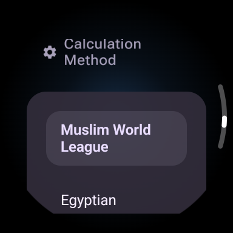

Prayer times, qibla compass, and digital tasbih — all on your wrist. Always ready, even without internet.
Precise times based on your location, offline operation, and a clean interface.
Automatic, accurate times based on your location. Never miss a prayer with notifications.
Wherever you are in the world, find the qibla instantly with an intuitive compass.
Track your dhikr with the built-in digital counter. Count with a single tap, no need to unlock.
Works without internet. See the next prayer time or tasbih count at a glance on your watch face.


